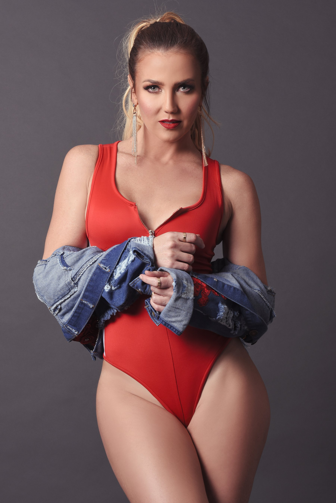

Último video musical
«Hay Tiempos»

Escrita por Andrés Castro y Karenka.

Último video musical
Escrita por Andrés Castro y Karenka.
Próximo lanzamiento
23.09.2026
Un sencillo de pop latino nostálgico, escrito por Karenka junto a María Bernal, y producido por Andrés Castro (Shakira, Carlos Vives), Amed Medina (Carlos Varela) y Loris Ceroni (Kalimba, Reyli Barba).
Entérate primero en InstagramEspectáculo de vedette en el que Karenka baila y canta a través de un recorrido por la música cubana. Tiene su propio álbum en vivo, «Live From Riviera Habana».
Su show de gira: se ha presentado en carnavales y teatros de todo México, y también en Japón.
Show 100% en vivo — voz principal y ensamble de cuatro músicos, noventa minutos en dos sets. Para congresos, cenas de gala y viajes de incentivo.
Solicitar informaciónKK Productions también produce Boleros y Sabores, una cena-show dedicada al bolero en Vidanta.
Karen Juantorena Foyo, conocida en los escenarios como Karenka, es cantante, bailarina, actriz y compositora cubana. Hoy encabeza algunos de los espectáculos más reconocidos de la Riviera Maya, después de una carrera que comenzó en Cuba y la llevó a girar por México y Japón.
Además de su propia música —cuatro álbumes y más de veinte sencillos— ha escrito canciones para Alejandro Fernández, Luis Fonsi, Belinda, Alejandra Guzmán, Lucero y Maia. Con el cantautor Reyli Barba mantiene una colaboración de años: le ha compuesto temas y también ha escrito canciones a cuatro manos junto a él. Compuso además el himno por los cien años de la Cruz Roja Mexicana, y compartió escenario y videoclips con Celia Cruz, incluyendo «Mi Vida Es Cantar».
Espacio para tu foto — súbela cuando la tengas
Síguela para ver detrás de cámaras de sus shows, adelantos de «Frío» y su día a día.
Toda la representación artística de Karenka es exclusiva de KK Productions. Para booking, prensa o información sobre el Formato Boutique, escribe directamente.
Kubilay Sener
Productor Ejecutivo y Manager — KK Productions